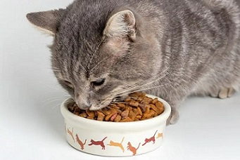
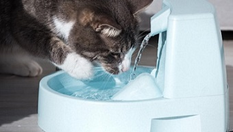

Cat-Profile
Cat-Diet
|
Cat Loves
|
A Song for Cat
Cat Diet

Milk
Products
Fish
Meal
Eggs
Cat Loves

Fresh, Nutritious Food
Running Water
Being
Groomed
A Song for Cat
Your browser does not support HTML5 audio. Here is
a link to the audio
instead.
More About Cats